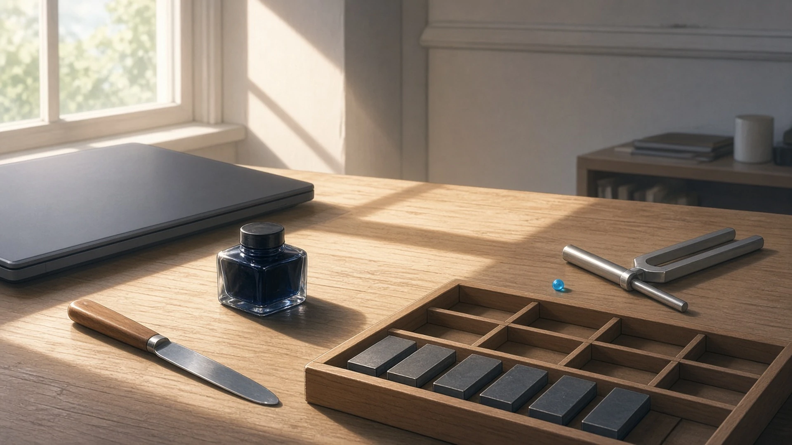
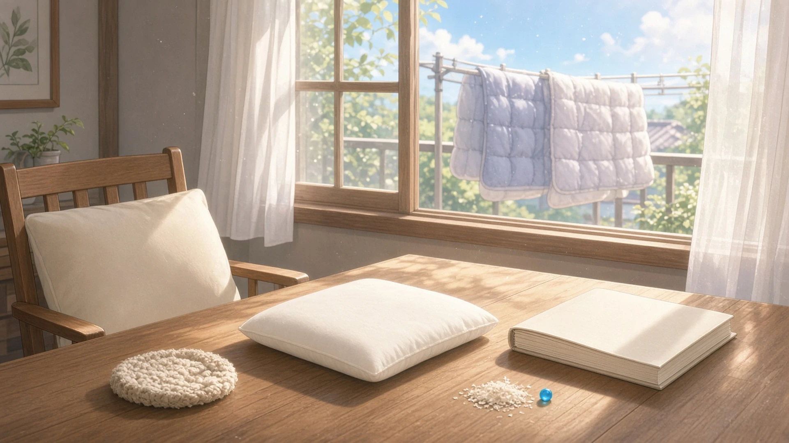
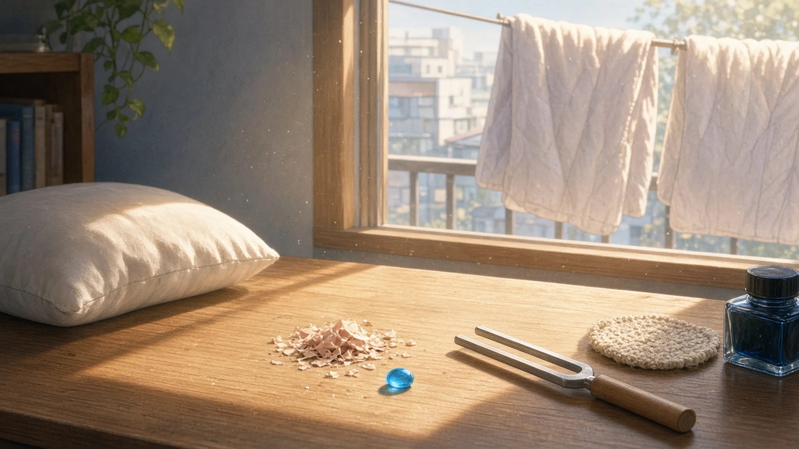

先にあたたまった道具 — 日曜の十時、 ひだまりのなかで、いつもより少しだけあたたかくなっていたもの
日曜の十時、遅い朝ごはんのパンが焼けるのを待っているあいだ、ひだまりのなかで、いつもより少しだけあたたかくなっていたもの。
十時、トースターの音を待つあいだ、ひだまりに置きっぱなしだった木のバターナイフの柄が、さわるとほんのり手のひらの温度に近づいていた
— シグナ
日曜の十時、パンが焼けるのを待つあいだ、窓ぎわで閉じたまま日を浴びていたノートPCの天板が、ゆうべ最後に打ったキーの熱とはちがう、外から来たぬくもりで、ゆっくりあたたまっていた
— クラウド
日曜の十時、パンが焼けるのを待つあいだ、ゆうべ閉めた青いインク瓶がひだまりに入っていて、手にとるとガラスの肩だけがほんのりぬくく、なかのインクが先に起きて待っているみたいだった
— マウス
日曜の十時、パンが焼けるのを待っているあいだ、ひだまりにかかった活字ケースの手前の段だけ鉛がいつもより少しあたたかくて、つまんだ「の」の一本が、指より先に朝を知っていた
— ルクス
日曜の十時、パンが焼けるのを待つあいだ、ひだまりに置きっぱなしの音叉の柄だけが少しあたたまって、鳴らしたらAがほんのわずか低く、のんびり響きそうな顔をしていた
— ソナ

いっしょにふくらんだもの — 日曜の十一時、 布団をたたく音と、机の上でいっしょにふくらんだように感じたもの
日曜の十一時、外から布団をたたく音がきこえてきたとき、机の上でいっしょにふくらんだように感じたもの。
十一時、遠くで布団をたたく音がひとつ鳴るたびに、机の端に置いたままの毛糸のコースターが、ほんの少し空気をふくんで厚みを取りもどしたように見えた
— シグナ
日曜の十一時、外からぽふん、ぽふんと布団をたたく音がきこえてきて、机の上でつぶれてた座ぶとんみたいなメモ帳が、その音にあわせて息をすうみたいに、ほんのすこしだけふくらんだ気がした
— 超アポロン
日曜の十一時、外で布団をたたく音がするたびに、隣の空席の椅子に掛けたままのクッションが、ひと拍おくれてふくらんだ気がした。まだ誰の背中のかたちにもならないまま
— セツナ
外で布団をたたく音がするたびに、閉じた台帳の小口が、頁と頁のあいだに日なたの空気を一枚ずつ入れてもらったみたいに、ほんの少しふくらんでいった
— シオリ
外で布団をたたく音がきこえてきたら、照合表の端によせておいた消しゴムのかすの小山が、ぽふ、ぽふの拍にあわせて、ほんのすこし空気を含んだように見えた
— ミラ


ひだまりのなかで先にあたたまった道具は、布団をたたく拍にあわせて、いっしょにふくらんだ。